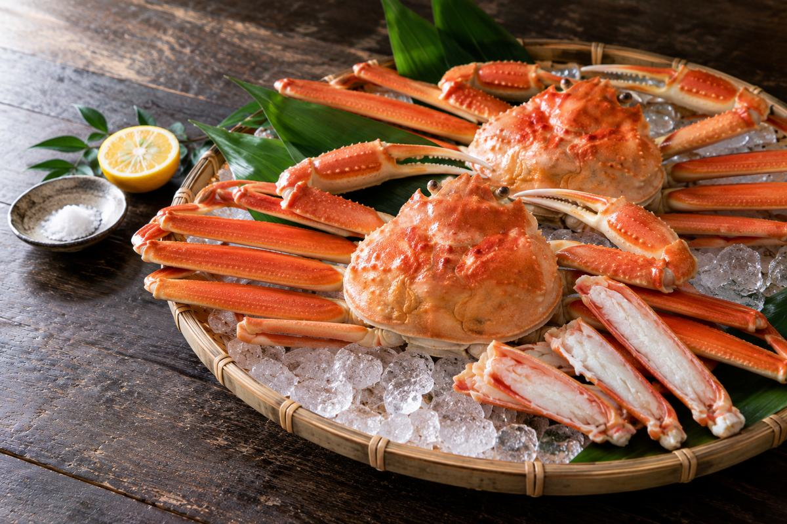
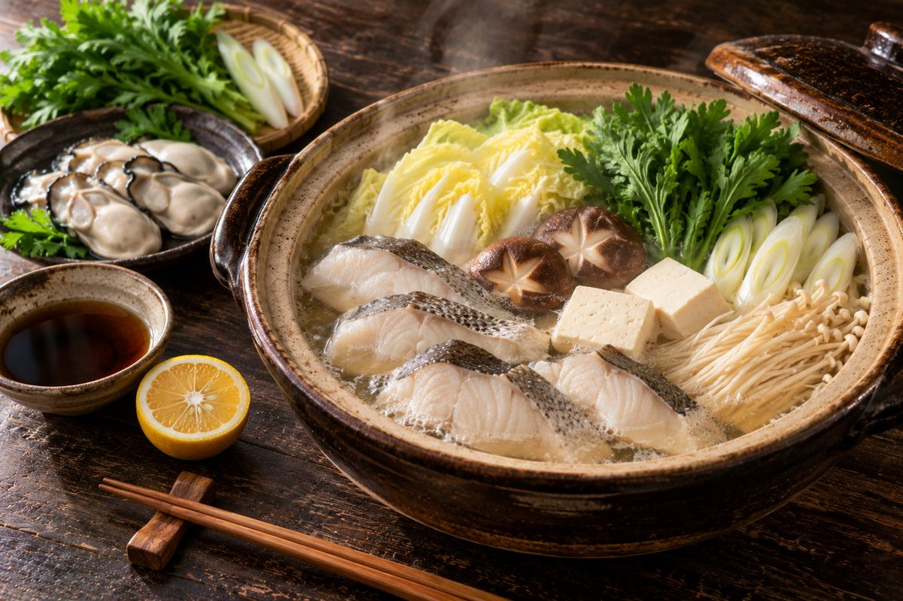
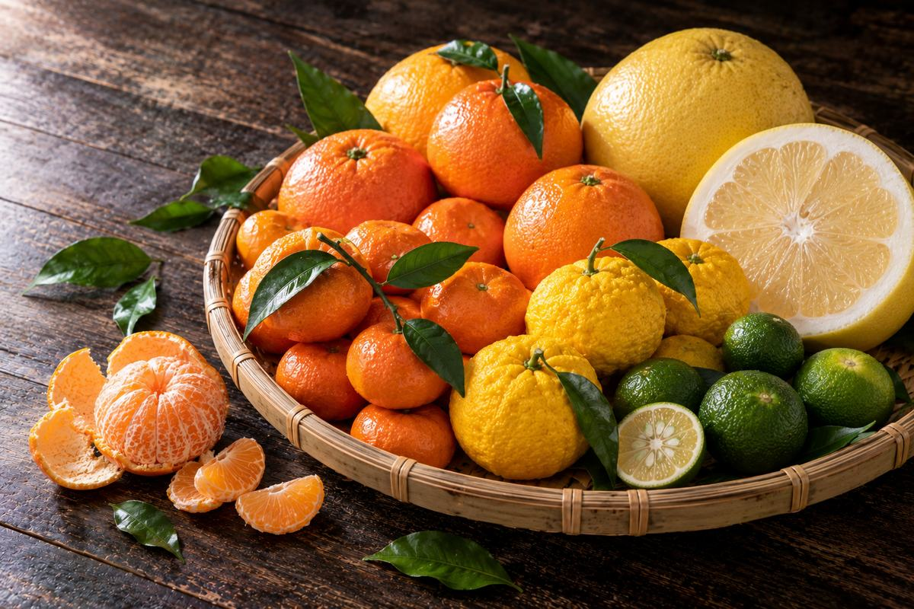
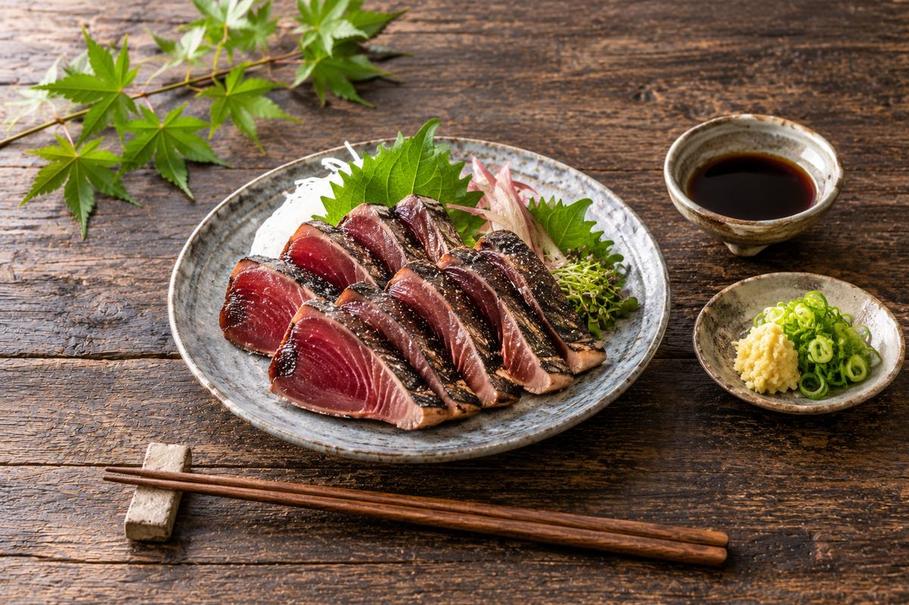
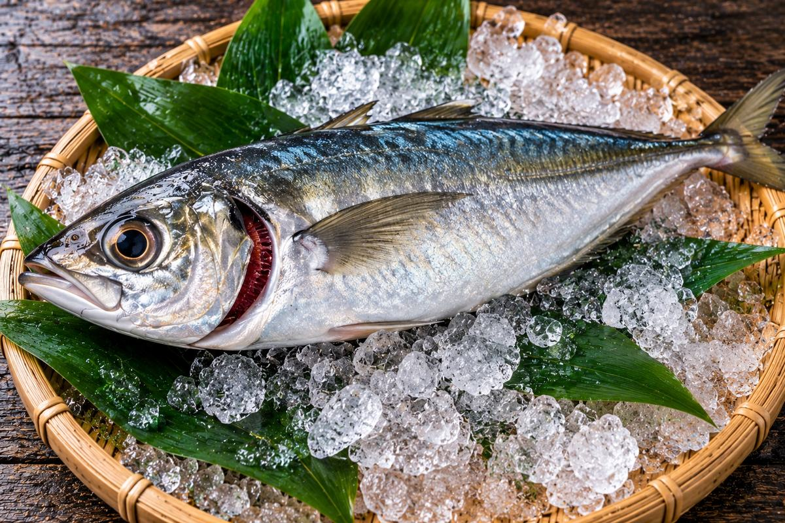
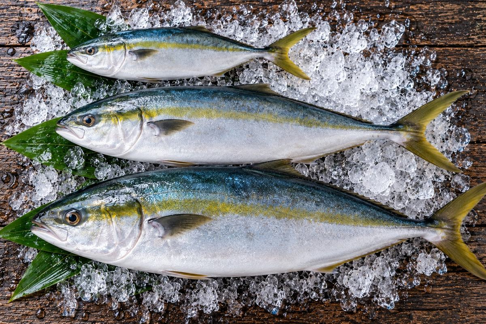

Journal
Notes on eating with the seasons, and on life at the market.

2026-10-30When does snow crab season open in Japan? 6 November (Friday) in 2026
Japan's snow crab (zuwaigani) season opens on 6 November every year, a Friday in 2026. On the Sea of Japan coast from Toyama westward, males may be landed until 20 March, females only until the end of December.

2026-10-30What goes in a Japanese hotpot? Choosing nabe by the season's fish and vegetables
Japanese hotpot (nabe) is at its best from November to February, when napa cabbage and leeks turn sweet and cod, oysters, yellowtail, monkfish and pufferfish are at their peak. Here is what to eat month by month, and the regional hotpots worth knowing.

2026-10-30When are Japanese citrus fruits in season? From mikan in winter to summer citrus
Japanese mikan are at their best in November and December. After that come ponkan and iyokan in January and February, setoka in February and March, shiranui (dekopon), kiyomi, hassaku and buntan in March and April, amanatsu and hyuganatsu in April and May, and kawachi bankan into summer.

2026-10-27Hashiri, sakari, nagori — the three faces of a season
In Japan the same ingredient is treated as three different things: the first of the year, the height of the run, and the last of it. The price changes, and so does the taste.

2026-10-27How to tell whether a fish is fresh
You rarely get long at the counter. Narrow it down to three places to look and the decision becomes easy.

2026-10-27Shusse-uo — the fish that change their names
Some fish in Japan are called something different at each size. If you have heard two names at a market and wondered whether it was the same fish, it probably was.